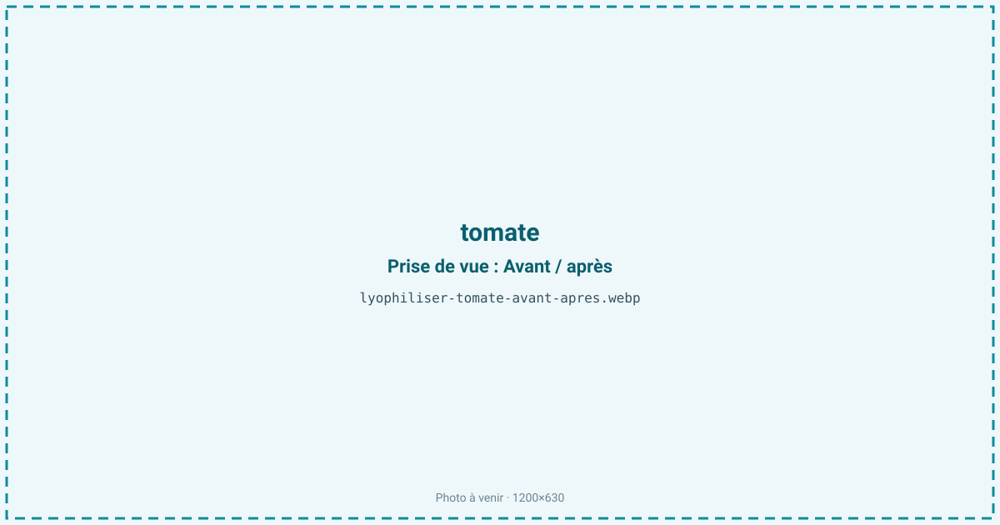
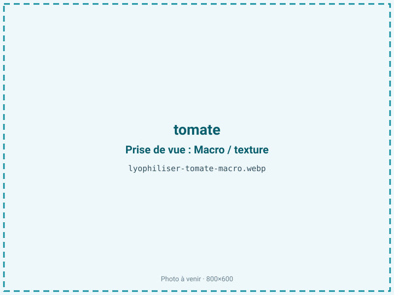
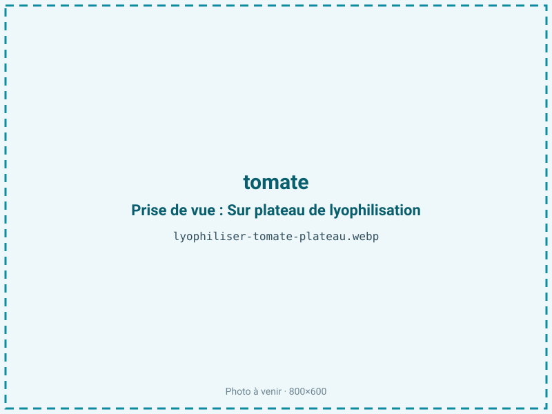
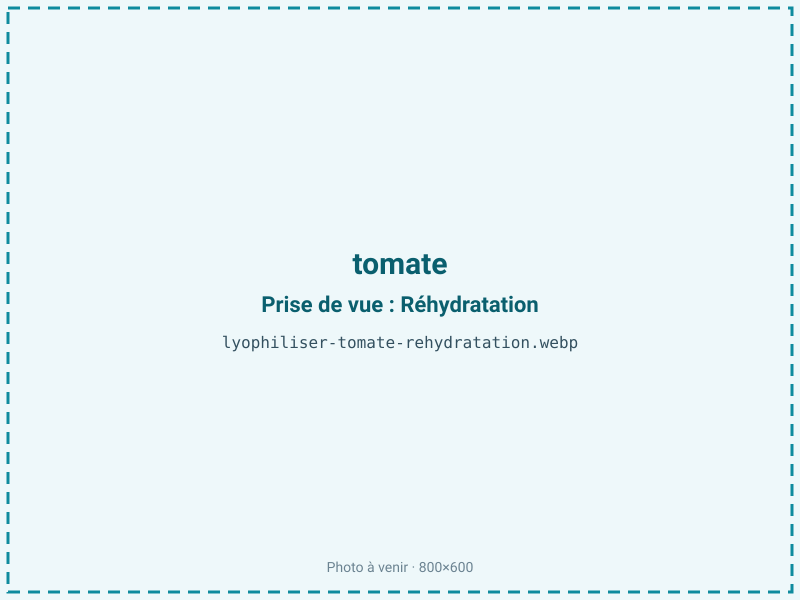

Lyophiliser des tomates
La tomate est à 94 % d'eau : fraîche, elle voyage mal et pourrit vite. Séchée, elle devient une poudre d'assaisonnement riche en umami et en couleur, ou des pétales pour la gastronomie. Pour de la poudre à longue conservation, le micro-ondes sous vide suffit ; la lyophilisation se réserve aux pétales de chef.

En bref
Comment tomate se comporte à la lyophilisation
Avec 94 % d'eau, la tomate est l'une des matières les plus aqueuses traitées ici, d'où un ratio défavorable de 16:1 : il faut 16 kg de tomate fraîche pour 1 kg de produit sec. Sa couleur vient du lycopène, caroténoïde liposoluble stable au froid mais sensible à la chaleur et à la lumière ; son goût mêle glutamate (umami), sucres et une acidité marquée (acide citrique, pH proche de 4,3). La peau cireuse ralentit la migration de l'eau et gagne à être incisée ou retirée.
À la congélation, l'eau cristallise dans une chair gélifiée par les pectines ; à la sublimation, elle laisse une structure poreuse fragile. Le couple sucre + acide expose au brunissement non enzymatique si la température monte, et le front de sublimation traverse lentement une pulpe chargée en jus. Les graines et le placenta gélatineux sèchent différemment de la chair.
Paramètres de cycle
Épépiner et trancher, ou étaler en purée pour une poudre ; retirer ou inciser la peau cireuse qui freine le séchage. En micro-ondes sous vide, voie économique privilégiée pour la poudre, l'eau part vite sous agitation à basse pression, en maîtrisant la puissance pour ne pas cuire.
En lyophilisation, réservée aux pétales, congeler à −30 °C puis sublimer à clayette modérée pour préserver la forme du pétale. La tomate étant un produit maigre sans lipides à protéger, on vise une aw basse de 0,20 à 0,30 : descendre est favorable à la stabilité, d'autant que la poudre acide est très hygroscopique. Critère d'arrêt : une poudre qui ne motte pas, aw inférieure ou égale à 0,30.
Pièges connus
- Très riche en eau : rendement faible, prévoir le volume.
- Sucre + acidité : surveiller le brunissement.



Variantes & provenance
La variété pèse lourd : une roma ou une San Marzano, charnues et pauvres en jus, offrent un bien meilleur rendement qu'une cœur-de-bœuf gorgée d'eau ou une tomate cerise. La maturité concentre le lycopène et le sucre : une tomate bien mûre donne une poudre plus rouge et plus douce, une tomate ferme un résultat plus acide. La saison et la culture (plein champ ou serre) modulent le degré Brix et la teneur en eau, donc le rendement. Pour des pétales de chef, on choisit des tomates fermes et régulières ; pour la poudre, des variétés pulpeuses à faible teneur en eau.
Conservation & DLUO
La tomate est un produit maigre : son facteur limitant est la reprise d'humidité, aggravée par une poudre acide et sucrée très hygroscopique qui s'agglomère au moindre contact avec l'air, et à la marge le brunissement non enzymatique. La tomate étant maigre, on vise une aw basse sans risque d'oxydation des lipides. À l'abri de la lumière, le lycopène reste stable et la couleur rouge tient. Sous barrière, la tomate lyophilisée tient 12 à 24 mois à température ambiante. Un dessiccant est vivement conseillé pour les formats poudre, qui captent l'humidité plus vite que les pétales, et une barrière opaque protège la couleur.
12 à 24 mois en sachet barrière.
Estimez selon votre emballage :
Face aux autres procédés de séchage
Au séchage à l'air chaud, la tomate brunit, prend un goût cuit de concentré et perd sa fraîcheur acidulée : c'est le procédé de la tomate séchée classique, adapté à un autre usage. Le micro-ondes sous vide donne une poudre à la couleur et à l'arôme corrects pour un coût bien inférieur au froid, d'où son choix par défaut pour le volume. La lyophilisation préserve le mieux la forme et l'arôme frais, mais son ratio 16:1 et son cycle long la rendent coûteuse : on la réserve aux pétales où texture et aspect justifient le prix.
Marchés & applications
Poudre d'assaisonnement et de bouillon, base de soupes et de sauces instantanées, aromatisation de snacks salés et de mélanges d'épices, pétales lyophilisés pour le dressage gastronomique. Les acheteurs types sont les industriels de la soupe et de l'assaisonnement, les fabricants de plats déshydratés et, pour les pétales, la restauration gastronomique.
- Poudre d'assaisonnement
- Soupes instantanées
- Pétales de chef (en lyophilisation)
Questions fréquentes — tomate
Pourquoi le micro-ondes sous vide plutôt que la lyophilisation ?
Pour de la poudre à longue conservation, il donne un résultat proche à un coût bien plus bas ; la tomate à 94 % d'eau a un ratio de 16:1 qui rend le froid onéreux. On réserve la lyophilisation aux pétales.
Quel est le rendement de la tomate ?
Faible : environ 16:1, soit 16 kg de tomate fraîche pour 1 kg de poudre, car elle contient 94 % d'eau. Il faut prévoir le volume en conséquence.
La poudre garde-t-elle sa couleur rouge ?
Oui : le lycopène est stable au froid et sous vide. À l'abri de la lumière, la couleur rouge se maintient longtemps.
Quelle tomate choisir pour un bon rendement ?
Les variétés charnues et pauvres en jus comme la roma ou la San Marzano ; évitez les tomates cerises et les cœur-de-bœuf trop aqueuses.
La poudre s'agglomère, pourquoi ?
Parce qu'elle est acide et sucrée, donc très hygroscopique : elle reprend l'humidité de l'air. Un conditionnement barrière avec dessiccant l'évite.
Peut-on faire des pétales entiers ?
Oui, en lyophilisation : c'est l'usage haut de gamme, pour le dressage. La poudre relève plutôt du micro-ondes sous vide.
Conserve-t-elle l'umami ?
Oui : le glutamate naturel est concentré par le séchage, ce qui fait de la poudre de tomate un exhausteur d'umami naturel.
Prochaine étape : envoyez-nous 200 g
Vous avez les repères de la tomate. La suite logique : nous envoyer un échantillon et repartir avec une fiche technique sur votre produit — rendement, aw finale, coût au kilo.
Tester la tomate — 250 à 500 €Déductible de votre premier lot.